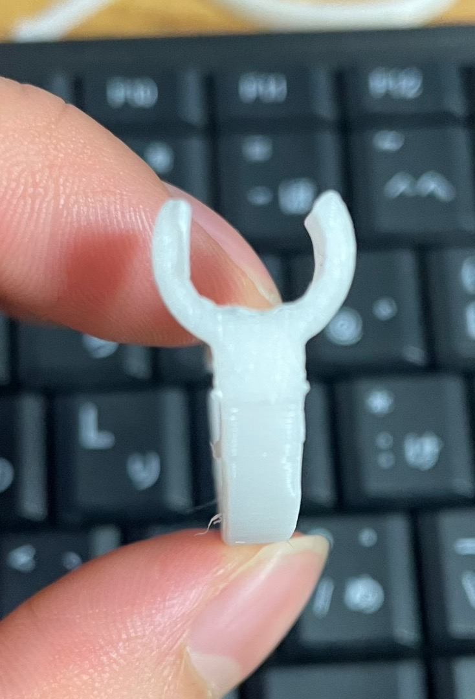

ワイヤレス充電器の不満を解消する一品
【構想図】
家にあるワイヤレス充電器の充電判定がシビアでいつもストレスでした。
そこで、レーザーカットを使い、ワイヤレス充電器にガイドをつけることでこの不満を解消しようと考えました。
【完成図】


【設計ファイル】
ファイルをファブラボにおいてきました。見つけ次第更新します。
【作品の説明】
ボールペンによくついているペンクリップの機能、そこにピンセットとしての機能を追加することでいつも持ち運ぶペンに＋αの付加価値を付けることにしました。
下記の画像部分をペンにはめて使うことが出来ます。

【制作理由】
鉛筆にペンクリップがないことの不便さから３Dプリンターでペンクリップを作ったことがあった。そのクリップにピンセットの機能がついたらおもしろいのではないかと考え制作に至った。
【】